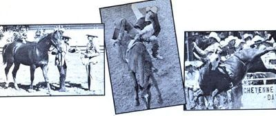

A professional cameraman shares the secrets of an exciting, do-it-yourself business:
If you'd like to work for yourself and you have a knack for shutterbugging, sports photography may be just the job you're looking for.
Now I don't mean you should run out and try to sell free-lance work to national athletic publications. (Oh, you may land an occasional sale with a magazine or paper ... but such chancy earnings aren't likely to keep the larder filled with ham and eggs.) Nope, I'm talking about snapping-and developing-pictures to be sold at sports events, to the photographed competitors themselves!
Peddling such contest "portraits" can bring in from $100 to $200 for a pleasant day's work. And (since most sports happenings occur on Saturdays and Sundays) you can use photography as a parttime business, or-if you like to travel-actually build up a circuit of events to memorialize . . . and spend your weekdays leisurely exploring the country-side as you travel to the next activity.
There's no end to the sports you can photograph, but I've found that the best "markets" feature individual-rather than team-competition. Have a look at the numbers: One Little League baseball game may require 20 or so photogenic young players . . . while a midsized rodeo will attract over 200 "camera eligible" entrants! So the real money's in those "solo" sports that attract lots of participants: motorcycle contests, horse shows, marathon races, winter ski carnivals, tractor pulls, skeet shoots, hang gliding events, whitewater races, frisbee meets . . . or anything else you can find!
And-believe me-"there's gold in them thar sportin' hills"! Take my previously mentioned 200-competitor sam e pie rodeo, for instance. If you sell each of just 30 broncobusters a single $4.00 action print, you'll gross a respectable $120. What's more, with good camera work, you'll often market a lot more shots. (At some small rodeos I've sold at least one picture to each competitor!)
The point is that you can make decent money in sports photography if you have good sales volume. And there are two main ingredients necessary for inspiring a large number of purchasers: quality and time. You'll need to do good photo graphic work . . . and do it quickly.
A GOOD CARPENTER CREDITS HIS TOOLS
In order to turn out a consistent, professional photo product, you'll have to have a suitable camera and quality developing equipment. The "snapper" itself should be that old standard of the field: the 35mm single lens reflex camera. Such a film shooter (which can be had for $100 used-or $160 new-and up) will be fully capable of handling fast action sports shots . . . as long as it has an interchangeable lens option anal can be set at a fast 1/1000 of a second shutter speed.
Single lens reflex cameras normally come equipped with either a 50mm or 35mm lens. One of these stock picture "eyes" will serve you well . . . when you can get close enough to your subject for the athlete's image to fill your frame. However, standing right next to the action is often downright unhealthful. I know, because I started out that way . . . and-take my word for it-shooting pictures of bucking bulls or skidding dragsters from only 15 feet away can be extremely hard on your heart!
So buy a 105mm or 135mm lens (it will cost around $100 used or up to $200 new) to attach to your trusty SLR. Then you'll be able to take fine, full-frame pictures . . . from safe distances. (Of course, if you can afford to grab hold of an 80-200mm zoom lens, you'll be even better able to get salable shots!)
Along with your fancy camera gear, you'll need a fast black-and-white film. (If you have the necessary developing equipment, you can boost your income with color shots . . . butthough many sporting-event photographers have succeeded with color photos-I've stuck to black-and-white with great success.) I use Kodak Tri-X film, which has an ASA rating of 400. You can, instead, use some other brand but be sure-once you find a film you like-to stick with it. If you do, you'll soon learn its quirks and responses and be able to consistently record the image you want . . . even if your light meter's on the blink. For example, I know that-with Tri-X-I can shoot almost any sunny-day action at an F stop of 11 (at 1/1000 second) and get clear, sharp shots.
IN THE DARK
A decent camera and film will enable you to shoot quality negatives. The rest of the photo paraphernalia necessary to go into business-good developing equipment-will help you make fine prints . . . with a minimum of work and bother.
Buy a compact enlarger ( for around $75 used or $126 new) that can be set up in a trailer or a hotel bathroom when you're on the road. Don't skimp on quality with this purchase, though, because "bargain basement" equipment may take so long to operate-or suffer so many breakdowns-that you'll lose a considerable amount of time (which, as the old saw goes, is money!).
After you round out your darkroom gear with a developing tank, print trays, easel, etc., choose the type of printing paper that's best for you. Here again, find one product-as you did with your film-and stick with it. You'll soon learn the paper's properties and be able to produce consistently professional prints.
I buy 250-sheet packages of resincoated ("RC"), "F" surface, 8" X 10" photo paper. I printand sell-only 8" X 10" shots, which insures that I don't have to waste time resetting the enlarger for various picture sizes or fooling around with a paper cutter in the dark. In addition, the plasticlike resin coating on this paper requires only four short minutes of washing instead of the more usual, timewasting half hour. And the glossy look is a sure-fire customer-catcher.
Also, other than fuss with different grades of finish paper (to balance negatives that are above or below normal contrast), I buy polycontrast paper and compensate for film lighting conditions by using a filter kit with my enlarger.
GROUP PROCESSING
The payoff of my "simplify-and-standardize" approach to darkroom gear is minimum development time. Since I always use the same film and paper, take shots when the subject image fills the camera, acid try to shoot on days when the lighting conditions are stable . . . I can print a whole series of photos at once. In fact, I can actually process 100 shots at one time (although-for lack of drying space-I generally develop my prints in groups of only 25).
Axed, when you save time in the darkroom, you can shoot (and print) a lot more pictures at the event. Such productivity is crucial to the sports photo business. When you're out filming a race or contest, you'll want to "capture" every single contestant not just once, but several times . . . to get the best (and most marketable) action shots possible. I've often snapped off six to eight frames during one eight-second bronco ride. (These were all picked action shots, too . . . not just a machine-gun spray of motor-driven pix that would have kept me in the darkroom the whole blamed night.)
My regular, considered shooting usually results in at least one dynamic, exciting print for every contestant . . . because I always aim to "immortalize" the competitor when he or she is displaying good athletic form. (One important make-'em-look-good tip: Always shoot a racer ahead of somebody else rather than behind . . . even if the slowpoke you are "clicking" is actually a lap down!)
AT THE ACTION
It's not hard to locate contests to photograph. Talk to local folks who participate in (or watch) the activities you want to record. Find out if your preferred sports have their own publications so you can check out the upcoming events in those mags. In addition, read the athletic listings in your regional newspaper . . . or call the sports editor of that daily gazette to find out about the gatherings he or she didn't have room to print. (As a bonus from this sort of inquiry, the journalist may express an interest in purchasing some of your shots!)
Once you choose-and arrive at-an-event, introduce yourself to the meet officials and explain that you're a sports photographer. Act courteous and competent . . . and be sure to dress cleanly (you'll be highly visible to the paying customers, so the contest organizers won't want you to look shoddy). You'll probably be granted free admission to most small and medium-sized sports "jousts".
THE OLD SELL GAME
I've tried three main approaches for selling my athletic action shots. You can use whichever strategy best suits your situation . . . or combine some of the elements of each.
[1] Develop prints-of every participant-on the first day of an event, and then sell these finished works, from some prominent location, on the succeeding days of competition. This is a good way to get folks to buy prints, but I don't find the potential extra payoff to be worth the additional expense and work of printing up at least one shot of every single competitor.
[2] After the first day of competition, make a contact sheet of each roll of exposed film . . . and post these small pictures where the contestants can view them. You can then take orders to develop specific individuals' sports portraits.
[3] Make two sets of contact sheets (one for your own files, one to cut up and mail out) and send the proofs to each customer to invite mail orders. This approach involves additional paper work and postage costs (and your fees should be set high enough to absorb the extra expense), but it's the best way to draw business from one-day sports events. Proof mailing also reaches those potential picture buyers who didn't buy a shot on the spot or never even got around to visiting your booth. Remember, though, to always get your order forms out as soon after the event as possible (i.e., strike while the memory is hot).
No matter what sales technique you use, be sure to set up a filing system for your proofs. I've worked out a simple grouping of three sets of numbers for mine. The first digits record which roll of film-on an annual cycle-the picture is on. The second number identifies which year the roll was shot. And the third denotes the manufacturer's numbermarked on the film-for the specific shot on the roll. (Thus the third picture on the fiftieth roll of film used during 1980 would be labeled 50-80-3. )
You'll also want to get a contestant list from the secretary of each event you cover . . . so you'll know who you're shooting pictures of! With that knowledge, you'll be sure to mail the right contact shots to the right people (put your file number on the photo backs so your customers can order by number). Or-if you're selling "on location"-you'll be able to label each entrant's pictures on your display board. (This "name tag" tactic boosts sales: Folks that spot a friend's moniker tend to go fetch the lucky photographed contestant who will then often buy a picture.)
WHAT TO CHARGE
The prices you ask will, of course, affect the amount of business you get . . . but I can't dictate what you should charge. Your billing rate may depend on such factors as the need for recurring business-if, say, you are following a multi-event cycle race circuit-or upon just where in the country you happen to be (one horse-show photographer I know can get $4.50 for his work out west, and $8.50-for the exact same services-back east).
My own practice is to charge a low enough price to encourage lots of buying. I figure the additional expense incurred by printing more pictures is less than the costs of travel, time, and equipment preparations that got me to the event in the first place. So rather than charge $8.00 a picture and sell five or six photos (to end up in the hole), I'll ask $4.00 a shot and sell 40 or more pictures (and come out on top). My profit-by-volume method, though, means that I can only afford to cover outdoor events . . . the lighting hassles with indoor and night activities severely reduce the number of pictures I can take.
But regardless of what price you ask, never mail-or even print, if you can possibly help it-any pictures that haven't been paid for in advance. Too many folks have a tendency to "forget" about their orders if they haven't already put out money on them.
AND THAT'S THE BIZ
That about wraps up my approach to the sports photography business. Competition camera work takes effort-and you won't make $200 every day-but the job is fun and you can, indeed, make a decent living doing it. So if you like taking pictures and want to travel and work for yourself . . . sports photography may just give you your shot at the good life!
EDITOR'S NOTE: Mr. Messineo's observations come from, the "eye" of experience. The camera ace has worked for several national magazines (including Newsweek), is a member of the American Society of Magazine Photographers, and has been in charge of Photographic Services at Colorado State University. And John wanted MOTHER's readers to know that-since producing good black and-white prints is one of the hardest photo skills to pick up-he's willing to offer a critiquing service for budding sports shooters. If you're interested in improving the quality of your athletic portraits, write John Messineo, Dept. TMEN, P.O. Box 1636, Ft. Collins, Colorado 80522. Send him two or three of your 8" X 10" black-and-white prints-packaged in cardboard-along with a self-addressed (return-mail-sized) stamped envelope aged a couple of dollars. John will gladly tell you what's wrong with your prints and how to improve them.
|
 |
|
|